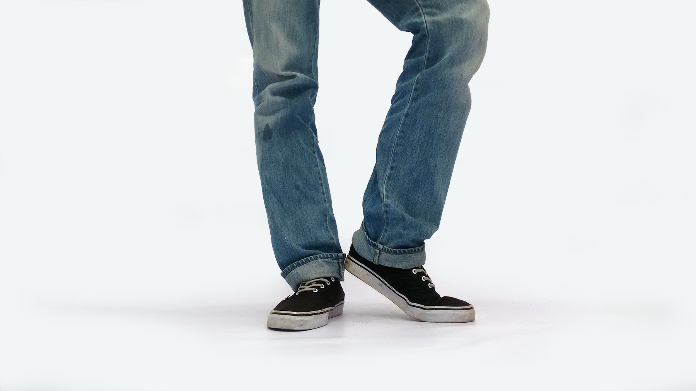
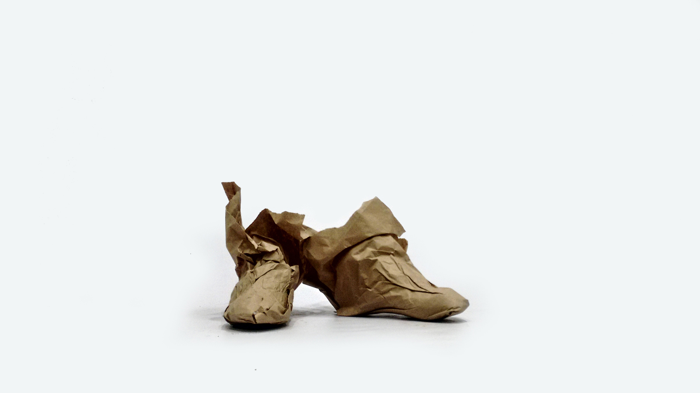
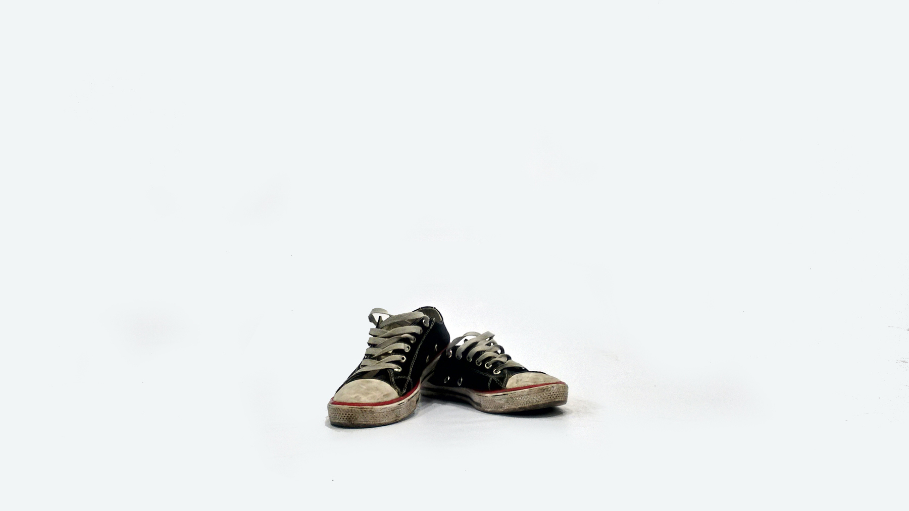
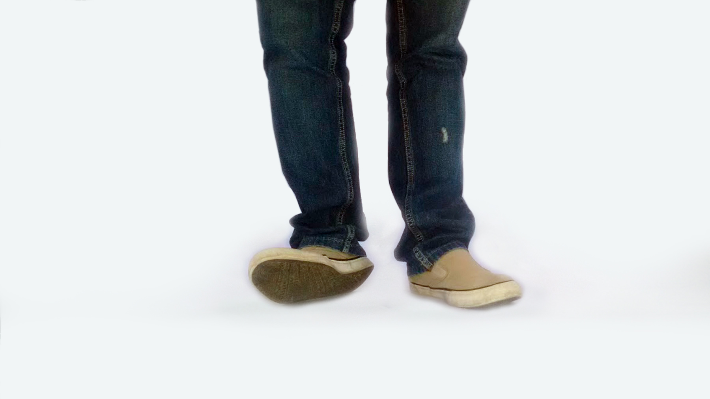

ZapatoLab

Mauricio Solano
Diseño y desarollo web / 35 Años / Talla 42
- ¿Qué esconden tus zapatos?
- Unos pies que parecen aletas.
- ¿Qué crees que fueron tus zapatos antes de ser tus zapatos?
- Un PDF.
- Menciona tres lugares o momentos significativos donde hayas estado con tus zapatos.
- Caminar sobre la línea como pingüino, llevarme cada mañana a la piscina y correr presurosos al mal camino.
- ¿Cuáles zapatos necesitas para vivir?
- Ningunos
- ¿Podrían vivir tus zapatos con alguien más?
- Pero por-su-pollo... ¡Incluso pienso que tendrían mejor forma y aroma! :o(

Carlos Bautista
Diseño y desarollo web / 22 Años / Talla 38
- ¿Qué esconden tus zapatos?
- Travesías
- ¿Qué crees que fueron tus zapatos antes de ser tus zapatos?
- Nada
- Menciona tres lugares o momentos significativos donde hayas estado con tus zapatos.
- "Nevado de cocouy - Chicamocha - Villa marina"
- ¿Cuáles zapatos necesitas para vivir?
- Converse
- ¿Podrían vivir tus zapatos con alguien más?
- No les daría el mismo valor
Marlon Alvarado
Diseño y desarollo web / varios Años / 38 Talla
- ¿Qué esconden tus zapatos?
- Medias impares
- ¿Qué crees que fueron tus zapatos antes de ser tus zapatos?
- Un diseño, una idea.
- Menciona tres lugares o momentos significativos donde hayas estado con tus zapatos.
- Están nuevos así que me han acompañado a una reunión familiar en casa de mi nono y al centro de la ciudad.
- ¿Cuáles zapatos necesitas para vivir?
- Ningunos, podría vivir sin ellos pero caminando por la sombrita.
- ¿Podrían vivir tus zapatos con alguien más?
- Si claro, se adaptan fácilmente son cómodos y no molestan para nada.

Ricardo Vanegas
Diseño y desarollo web / 27 Años / Talla 42
- ¿Qué esconden tus zapatos?
- un niño, un hombre, y una bestia
- ¿Qué crees que fueron tus zapatos antes de ser tus zapatos?
- un yuppie gringo vestido de gris y muy perfumado
- Menciona tres lugares o momentos significativos donde hayas estado con tus zapatos.
- viviendo en medellín - visita a Guatapé - Puentelab ;)
- ¿Cuáles zapatos necesitas para vivir?
- Unos que nunca se desgasten, nunca se ensucien y siempre huelan a nuevo
- ¿Podrían vivir tus zapatos con alguien más?
- si, se adaptarian en unas semanas, son amigables con otra gente y con gatos, no tanto con los perros y los niños, eso si, que no abusen con el uso!

Jorge Parada
Diseño y desarollo web / 29 Años / Talla 40
- ¿Qué esconden tus zapatos?
- Un par de pies que siempre quieren salir a caminar descalzos.
- ¿Qué crees que fueron tus zapatos antes de ser tus zapatos?
- Creo que fueron un pedazo de tela colombiana y un pedazo de caucho chino que se unieron para la eternidad en Cúcuta.
- Menciona tres lugares o momentos significativos donde hayas estado con tus zapatos.
- En la residencia Puentelab, en el complejo acuático de Cúcuta y en el momento en que Colombia le ganó a Perú en la copa América.
- ¿Cuáles zapatos necesitas para vivir?
- Siempre un zapato plano y ventilado.
- ¿Podrían vivir tus zapatos con alguien más?
- No, se han moldeado a mis pies como un guante, mis pies y ellos son inseparables compañeros.

Lina Ruiz
Coordinación / 25 Años / 37 Talla
- ¿Qué esconden tus zapatos?
- rastros de otras tierras, de otros mundos.
- ¿Qué crees que fueron tus zapatos antes de ser tus zapatos?
- hormas desamparadas, huérfanas, solitarias.
- Menciona tres lugares o momentos significativos donde hayas estado con tus zapatos.
- Cadaqués, Berlín y Cúcuta.
- ¿Cuáles zapatos necesitas para vivir?
- Los que me permitan viajar y estar cómoda.
- ¿Podrían vivir tus zapatos con alguien más?
- Sí, con cualquiera que los use y los disfrute como yo.

+
Leonardo Samacá
Diseño y Desarrollo Web / Más de 20, Menos de 30 / Talla 39
- ¿Qué esconden tus zapatos?
- Un monton de mugre
- ¿Qué crees que fueron tus zapatos antes de ser tus zapatos?
- unos chapaticos
- Menciona tres lugares o momentos significativos donde hayas estado con tus zapatos.
- el rio, un baile y cuando corro
- ¿Cuáles zapatos necesitas para vivir?
- Vans
- ¿Podrían vivir tus zapatos con alguien más?
- claro, ellos no tiene sentimientos, se irian con el primero que les ofrezca talco
Javier Sguerra
audiovisual / 65 + 41 + 15 = ? Años / Talla 41
- ¿Qué esconden tus zapatos?
- Personas, recorridos
- ¿Qué crees que fueron tus zapatos antes de ser tus zapatos?
- Animales y plantas
- Menciona tres lugares o momentos significativos donde hayas estado con tus zapatos.
- Comunidad Manuela Beltran; corredor ecológico Bochalema; reconocimiento barrio el páramo y cementerio
- ¿Cuáles zapatos necesitas para vivir?
- Los zapatos del otro
- ¿Podrían vivir tus zapatos con alguien más?
- Si. Por turnos

Miguel Tejada
Escritura / Muchos Años / Talla 10
- ¿Qué esconden tus zapatos?
- Polvo lunar. Porque vivo en la luna.
- ¿Qué crees que fueron tus zapatos antes de ser tus zapatos?
- Árbol, agua, supernovas, fósil.
- Menciona tres lugares o momentos significativos donde hayas estado con tus zapatos.
- La capilla sixtina, la casa de mis padres, Guchalito (Chocó)
- ¿Cuáles zapatos necesitas para vivir?
- Unos que hablen
- ¿Podrían vivir tus zapatos con alguien más?
- Claro: vivirían en el estómago de un tiburón

Carlos Saladen
Audiovisual / 36 Años / Talla 44
- ¿Qué esconden tus zapatos?
- Nada
- ¿Qué crees que fueron tus zapatos antes de ser tus zapatos?
- Petróleo
- Menciona tres lugares o momentos significativos donde hayas estado con tus zapatos.
- Prefiero andar descalzo
- ¿Cuáles zapatos necesitas para vivir?
- Un par de buenas sandalias
- ¿Podrían vivir tus zapatos con alguien más?
- Si los necesita, sí
Angelica Gallardo
Escritura / 26 Años / Talla 39
- ¿Qué esconden tus zapatos?
- Mugre, pedacitos de arena y hasta agujas
- ¿Qué crees que fueron tus zapatos antes de ser tus zapatos?
- Vacas, gigantes y gorditas
- Menciona tres lugares o momentos significativos donde hayas estado con tus zapatos.
- En mis grados, en el nacimiento de mis proyectos y en el estreno de star wars (los cuatro que alcancé)
- ¿Cuáles zapatos necesitas para vivir?
- Unos cómodos suavecitos todo terreno pero de buen ver
- ¿Podrían vivir tus zapatos con alguien más?
- Seeeee, pero no creo que le duren mucho
Daniel Arévalo
Producción Audiovisual / 24 Años y contando! / Talla 39
- ¿Qué esconden tus zapatos?
- Caminos
- ¿Qué crees que fueron tus zapatos antes de ser tus zapatos?
- Una promoción!
- Menciona tres lugares o momentos significativos donde hayas estado con tus zapatos.
- El Barne, Las calles de Medellín y el cruce por la trocha en Colombia y Venezuela.
- ¿Cuáles zapatos necesitas para vivir?
- Un par de cómodos tennis!
- ¿Podrían vivir tus zapatos con alguien más?
- Sí, por más dañados... se podrá hacer un remiendo y cederlos a alguien más o si te quedan pequeños o grandes hay que regalarlos...

Kevin Gelvez
Audiovisual / 20 Años / Talla 40
- ¿Qué esconden tus zapatos?
- Medias
- ¿Qué crees que fueron tus zapatos antes de ser tus zapatos?
- Poliester
- Menciona tres lugares o momentos significativos donde hayas estado con tus zapatos.
- No sé si los llevaba puestos
- ¿Cuáles zapatos necesitas para vivir?
- Ninguno
- ¿Podrían vivir tus zapatos con alguien más?
- Si, por que no son un órgano vital!

Fernando Chelle
Escritura / 39 Años / Talla 43
- ¿Qué esconden tus zapatos?
- Mis pies
- ¿Qué crees que fueron tus zapatos antes de ser tus zapatos?
- Originalmente fueron un animal. Cuando este murió, o lo mataron para ser más exacto, fue despojado de su piel. Esa piel fue trasladada a una curtiembre. Allí, después de diversos tratamientos, fue acondicionada para que pudiera ser maleable, útil para la confección de lo que mucho tiempo después llegaron a ser mis zapatos.
- Menciona tres lugares o momentos significativos donde hayas estado con tus zapatos.
- En Cartagena recuerdo que estuve con ellos pero no los usé, los llevé conmigo pero permanecieron en la maleta. Sí, tuvieron la satisfacción, porque creo que eso es lo que sintieron, de pisar el suelo de Caracas, y como fue un par de zapatos que traje desde Uruguay, veo que estos amigos han tenido la dicha de recorrer tres países, sin pasaporte.
- ¿Cuáles zapatos necesitas para vivir?
- Prefiero los míos, llegado el caso no tendría problemas de ponerme los de otro, pero si puedo elegir prefiero los míos.
- ¿Podrían vivir tus zapatos con alguien más?
- Estoy seguro que sí, quizá no se amolden a sus pies como a los míos pero resultarán útiles. En el fondo ellos saben que fueron creados para servir y no únicamente a mi persona.

Silvie Ojeda
Radio / 2 Años / Talla 39 grande
- ¿Qué esconden tus zapatos?
- Uñas despintadas
- ¿Qué crees que fueron tus zapatos antes de ser tus zapatos?
- Motas de algodón
- Menciona tres lugares o momentos significativos donde hayas estado con tus zapatos.
- New York, lanzamiento de Giumbelé, PuenteLab
- ¿Cuáles zapatos necesitas para vivir?
- Ninguno
- ¿Podrían vivir tus zapatos con alguien más?
- Sip, ya de por si conviven con mi marido y mis hijos

Vito Serrano
Radio / 25 Años / Talla 39
- ¿Qué esconden tus zapatos?
- El andar de una parte de mi vida.
- ¿Qué crees que fueron tus zapatos antes de ser tus zapatos?
- Una idea
- Menciona tres lugares o momentos significativos donde hayas estado con tus zapatos.
- Mi novia, atrapando un ladrón, jugando fútbol.
- ¿Cuáles zapatos necesitas para vivir?
- 2 pares
- ¿Podrían vivir tus zapatos con alguien más?
- No, soy creyendete en que las energías se transmiten a través de este tipo de elementos.

Yosman Serrano
Radio / 20 Años / Talla 40
- ¿Qué esconden tus zapatos?
- Cientos de kilómetros y experiencias.
- ¿Qué crees que fueron tus zapatos antes de ser tus zapatos?
- El casco de un Vikingo.
- Menciona tres lugares o momentos significativos donde hayas estado con tus zapatos.
- Mi universidad, centro de Cúcuta en la noche y sobre un telón blanco de puentelab.
- ¿Cuáles zapatos necesitas para vivir?
- Nike azul con negro.
- ¿Podrían vivir tus zapatos con alguien más?
- Podría, pero además de la talla, deberá tener aventuras por descubrir y que a mis zapatos le interese.

Anónimo Perezoso
Area / Años / Talla
- ¿Qué esconden tus zapatos?
- ¿Qué crees que fueron tus zapatos antes de ser tus zapatos?
- Menciona tres lugares o momentos significativos donde hayas estado con tus zapatos.
- ¿Cuáles zapatos necesitas para vivir?
- ¿Podrían vivir tus zapatos con alguien más?

Anónimo Perezoso
Area / Años / Talla
- ¿Qué esconden tus zapatos?
- ¿Qué crees que fueron tus zapatos antes de ser tus zapatos?
- Menciona tres lugares o momentos significativos donde hayas estado con tus zapatos.
- ¿Cuáles zapatos necesitas para vivir?
- ¿Podrían vivir tus zapatos con alguien más?
Felipe Salcedo
Gestion de proyectos / 25 Años / Talla 40
- ¿Qué esconden tus zapatos?
- Ausencia de plantillas
- ¿Qué crees que fueron tus zapatos antes de ser tus zapatos?
- Viento andante
- Menciona tres lugares o momentos significativos donde hayas estado con tus zapatos.
- Donde nací - en una playa - mi hogar
- ¿Cuáles zapatos necesitas para vivir?
- Sandalias
- ¿Podrían vivir tus zapatos con alguien más?
- Mis zapatos pueden vivir y existir como un molde para quien lo necesite.

Grecia Quintero
Proyectos / 31 Años / Talla 39
- ¿Qué esconden tus zapatos?
- Rutas
- ¿Qué crees que fueron tus zapatos antes de ser tus zapatos?
- Una casa que necesitaba ser habitada
- Menciona tres lugares o momentos significativos donde hayas estado con tus zapatos.
- la montaña, la laguna de cacóta y mientras bailaba con mis enanos (hijos).
- ¿Cuáles zapatos necesitas para vivir?
- Los de un muchilero.
- ¿Podrían vivir tus zapatos con alguien más?
- Si, siempre y cuando esa persona se deje llevar por ellos.
Stephany Carreño
Escritura / 26 Años / Talla 40
- ¿Qué esconden tus zapatos?
- Un problema ortopédico
- ¿Qué crees que fueron tus zapatos antes de ser tus zapatos?
- El sueño de alguien.
- Menciona tres lugares o momentos significativos donde hayas estado con tus zapatos
- En mi grado, debajo de la cama de él y en éste ejercicio.
- ¿Cuáles zapatos necesitas para vivir?
- Necesito zapatos cómodos. Con suela gruesa o plataforma.
- ¿Podrían vivir tus zapatos con alguien más?
- No creería que puedan vivir con alguien más, porque por lo general todos mis zapatos terminan dañados.

Anónimo Perez
Area / Años / Talla
- ¿Qué esconden tus zapatos?
- ¿Qué crees que fueron tus zapatos antes de ser tus zapatos?
- Menciona tres lugares o momentos significativos donde hayas estado con tus zapatos
- ¿Cuáles zapatos necesitas para vivir?
- ¿Podrían vivir tus zapatos con alguien más?
Diego García
Gestión / 28 Años / Talla 39
- ¿Qué esconden tus zapatos?
- Esconden varios cayos y heridas, porque me gusta caminar descalzo, me gusta pensar que la planta de pie es un mapa topográfico de todos los lugares en el que he estado
- ¿Qué crees que fueron tus zapatos antes de ser tus zapatos?
- Una idea de una persona
- Menciona tres lugares o momentos significativos donde hayas estado con tus zapatos
- Rio Zulia, Páramo de chingaza, Quinta de Santa Tereza
- ¿Cuáles zapatos necesitas para vivir?
- Unos cómodos
- ¿Podrían vivir tus zapatos con alguien más?
- Diría que si alguien se pone mis zapatos yo también me pondría los de esa persona, una buena forma de entender este proyecto mas de ponerse en los zapatos de alguien mas es preguntarse también como.
Mariana Murcia
Gestión / 28 Años / Talla 37
- ¿Qué esconden tus zapatos?
- La intensión de correr.
- ¿Qué crees que fueron tus zapatos antes de ser tus zapatos?
- Los pedales de una bicicleta.
- Menciona tres lugares o momentos significativos donde hayas estado con tus zapatos
- Mis zapatos me ayudaron a atravesar una isla de costa a costa / Son zapatos para saltar en charcos / Cuando me los pongo, se inventan sus propias maratones.
- ¿Cuáles zapatos necesitas para vivir?
- Zapatos que combinen con las acciones que emprendo.
- ¿Podrían vivir tus zapatos con alguien más?
- Si podrían, y podrían ser los zapatos de alguien más si esos otros estuvieran dispuestos a intercambiar sus zapatos conmigo. Me gusta mucho la idea del disfraz en ese sentido, cómo mis zapatos pueden entregarle o quitarle un poder al que se los ponga.
Anónimo Perezoso
Area / Años / Talla
- ¿Qué esconden tus zapatos?
- ¿Qué crees que fueron tus zapatos antes de ser tus zapatos?
- Menciona tres lugares o momentos significativos donde hayas estado con tus zapatos
- ¿Cuáles zapatos necesitas para vivir?
- ¿Podrían vivir tus zapatos con alguien más?
Liliana Torrado
Centro Cultural Quinta Teresa / 35 Años / Talla 36
- ¿Qué esconden tus zapatos?
- nada.
- ¿Qué crees que fueron tus zapatos antes de ser tus zapatos?
- un mostrario en un almacen.
- Menciona tres lugares o momentos significativos donde hayas estado con tus zapatos
- disco ,trabajo , universidad.
- ¿Cuáles zapatos necesitas para vivir?
- ninguno.
- ¿Podrían vivir tus zapatos con alguien más?
- si, pues no me apego nunca al o que tengo.

+
Anónino Perezoso
Area / Años / Talla
- ¿Qué esconden tus zapatos?
- ¿Qué crees que fueron tus zapatos antes de ser tus zapatos?
- Menciona tres lugares o momentos significativos donde hayas estado con tus zapatos
- ¿Cuáles zapatos necesitas para vivir?
- ¿Podrían vivir tus zapatos con alguien más?

+
Anónimo Perezoso
Area / Años / Talla
- ¿Qué esconden tus zapatos?
- ¿Qué crees que fueron tus zapatos antes de ser tus zapatos?
- Menciona tres lugares o momentos significativos donde hayas estado con tus zapatos
- ¿Cuáles zapatos necesitas para vivir?
- ¿Podrían vivir tus zapatos con alguien más?
Kely Valles
Radio / 19 Años / Talla 37
- ¿Qué esconden tus zapatos?
- Experiencias.
- ¿Qué crees que fueron tus zapatos antes de ser tus zapatos?
- Algo más valioso que lo que es ahora.
- Menciona tres lugares o momentos significativos donde hayas estado con tus zapatos
- Puente lab, caminatas, donde vaya.
- ¿Cuáles zapatos necesitas para vivir?
- Los que me brinden comodidad.
- ¿Podrían vivir tus zapatos con alguien más?
- Sí.
Luis Guillott
Radio / 39 Años / 41 Talla
- ¿Qué esconden tus zapatos?
- Velocidad.
- ¿Qué crees que fueron tus zapatos antes de ser tus zapatos?
- Un trompetista.
- Menciona tres lugares o momentos significativos donde hayas estado con tus zapatos
- Guadalajara, record store day 2015, seun kuti Medellín 2014.
- ¿Cuáles zapatos necesitas para vivir?
- Zapatos visionarios
- ¿Podrían vivir tus zapatos con alguien más?
- Si, la estoy viviendo en Cucuta compartiendo mis conocimientos y experiencias con todos los participantes.
Ana Garzon
Coordinación general / 28 Años / Talla 35
- ¿Qué esconden tus zapatos?
- Callos, dolores, descuidos, aprendizajes añejados, la raiz.
- ¿Qué crees que fueron tus zapatos antes de ser tus zapatos?
- iiiiiish, una vaca con terneritos, una maquila, una pila de cueros viejos. Una oportunidad en la vitrina.
- Menciona tres lugares o momentos significativos donde hayas estado con tus zapatos
- PUENTELAB en cucuta, mexico en crater invertido y la universidad a final del 2011 con la efervecencia colectiva de la MANE.
- ¿Cuáles zapatos necesitas para vivir?
- Unos suavecitos, que aguanten la corrida, que no se dañen tan rapido, que duren, que se pueda bailar mucho, que aguanten la larga caminada.
- ¿Podrían vivir tus zapatos con alguien más?
- siempre es posible a pesar de la talla, que se monten en mi zapatos el que quiera y que se enamoren del caminado. Son arrebatados pero van con ritmo.
Iván Otero
Imagen/ 33cAños / Talla 9 1/2 US
- ¿Qué esconden tus zapatos?
- Piel.
- ¿Qué crees que fueron tus zapatos antes de ser tus zapatos?
- Esclavitud.
- Menciona tres lugares o momentos significativos donde hayas estado con tus zapatos
- Primer despecho, Segundo despecho y el que falta.
- ¿Cuáles zapatos necesitas para vivir?
- Cualquiera que brille.
- ¿Podrían vivir tus zapatos con alguien más?
- Nunca.

Susana Quintero
Escritura / 44 Años / Talla 38
- ¿Qué esconden tus zapatos?
- Unos deditos salvajes.
- ¿Qué crees que fueron tus zapatos antes de ser tus zapatos?
- Anduvieron un largo camino, tan raro que ni siquiera soñaban con ser zapatos. Fueron petróleo, goma, tela, ensamble, papel, caja, viajeros. Pasaron por muchas manos antes de cuidarme los pies.
- Menciona tres lugares o momentos significativos donde hayas estado con tus zapatos.
- La calle, la lluvia, el ahora.
- ¿Cuáles zapatos necesitas para vivir?
- Los que me den alegría... me alegro con cosas tan simples como los zapatos!
- ¿Podrían vivir tus zapatos con alguien más?
- No quiero preguntarles, me parece macabro pensar en su traición.
Edwin Alexander Arcos
Emprendimiento / 22 Años / Talla 43
- ¿Qué esconden tus zapatos?
- Resistencia a no caer, fricción.
- ¿Qué crees que fueron tus zapatos antes de ser tus zapatos?
- Estaban dispersos en la naturaleza
- Menciona tres lugares o momentos significativos donde hayas estado con tus zapatos.
- Debajo de mi cama
- ¿Cuáles zapatos necesitas para vivir?
- Botas de baloncesto
- ¿Podrían vivir tus zapatos con alguien más?
- Quién calze mi número o los resista
Xavier Marquez Rolon
Mimo / 27 Años / Talla 40
- ¿Qué esconden tus zapatos?
- kilometros
- ¿Qué crees que fueron tus zapatos antes de ser tus zapatos?
- un torote
- Menciona tres lugares o momentos significativos donde hayas estado con tus zapatos.
- la playa ,espectaculos :)
- ¿Cuáles zapatos necesitas para vivir?
- de clown
- ¿Podrían vivir tus zapatos con alguien más?
- si con cualquier clown pero que este muy feliz
Sandra Perez
Circense / 25 Años / Talla 37
- ¿Qué esconden tus zapatos?
- aventuras
- ¿Qué crees que fueron tus zapatos antes de ser tus zapatos?
- nada
- Menciona tres lugares o momentos significativos donde hayas estado con tus zapatos.
- mi casa, el campo, trabajo
- ¿Cuáles zapatos necesitas para vivir?
- los mios
- ¿Podrían vivir tus zapatos con alguien más?
- no, porque son mios...
Diego A. Sánchez
Estudiante / 18 Años / Talla 43
- ¿Qué esconden tus zapatos?
- Muchos caminos
- ¿Qué crees que fueron tus zapatos antes de ser tus zapatos?
- Material sintético en un almacén
- Menciona tres lugares o momentos significativos donde hayas estado con tus zapatos.
- Bogota, Pamplona, Guatavita
- ¿Cuáles zapatos necesitas para vivir?
- Las plantas de mis pies
- ¿Podrían vivir tus zapatos con alguien más?
- Ellos no se apegan.

Harvin Pareja
Humanidades / 22 Años / Talla 41
- ¿Qué esconden tus zapatos?
- mis pies
- ¿Qué crees que fueron tus zapatos antes de ser tus zapatos?
- vida
- Menciona tres lugares o momentos significativos donde hayas estado con tus zapatos.
- mi cuarto, la calle, la montaña
- ¿Cuáles zapatos necesitas para vivir?
- ninguno
- ¿Podrían vivir tus zapatos con alguien más?
- si, nada le pertenece a nadie, el apego solo crea sufrimiento y atraso
Diana Olivares
Estudiante / 21 Años / Talla 36
- ¿Qué esconden tus zapatos?
- una mezcla de libertad, y color enmarcado en las huellas de quien los usa.
- ¿Qué crees que fueron tus zapatos antes de ser tus zapatos?
- Alas
- Menciona tres lugares o momentos significativos donde hayas estado con tus zapatos.
- El mar, El castillo, La montaña.
- ¿Cuáles zapatos necesitas para vivir?
- Sólo mis pies, necesito para andar y recorrer los pasos de mi camino.
- ¿Podrían vivir tus zapatos con alguien más?
- Depende de la esencia, aunque creo que es algo único y lleno de mucha privacidad del alma.
Sonia Milena Ballesteros Laverde
Docente de artes escénicas / 30 Años / Talla 39
- ¿Qué esconden tus zapatos?
- La creatividad de un diseño
- ¿Qué crees que fueron tus zapatos antes de ser tus zapatos?
- Una herramienta inspiradora
- Menciona tres lugares o momentos significativos donde hayas estado con tus zapatos.
- Teatro, en el sendero ecológico, vivenciando aprendizajes
- ¿Cuáles zapatos necesitas para vivir?
- los de la piel de mi alma
- ¿Podrían vivir tus zapatos con alguien más?
- si, todo en este mundo es prestado y todo es de todos

Yulitza Parada
Estudiante / 19 Años / Talla 36
- ¿Qué esconden tus zapatos?
- Caminos recorridos y sin recorrer
- ¿Qué crees que fueron tus zapatos antes de ser tus zapatos?
- Una tela muy feliz... lástima
- Menciona tres lugares o momentos significativos donde hayas estado con tus zapatos.
- Un concurso importante, una salida con el amor de mi vida, un viaje
- ¿Cuáles zapatos necesitas para vivir?
- Unos que me fabriquen comida
- ¿Podrían vivir tus zapatos con alguien más?
- Sí, tiene derecho jaja
Edwin Jaimes
Estudiante / Desde la creación, pero, para ser exacto con éste nombre llevo 18 Años / Talla: A veces 39, a veces 40, depende de la mujer que pregunte
- ¿Qué esconden tus zapatos?
- Miles de sentimientos, sensaciones y emociones no expresadas y guardadas para bienestar de todos ellos
- ¿Qué crees que fueron tus zapatos antes de ser tus zapatos?
- Cabello de vaca....?
- Menciona tres lugares o momentos significativos donde hayas estado con tus zapatos.
- Mi fiesta, mi primer beso y en un campamento
- ¿Cuáles zapatos necesitas para vivir?
- Los zapatos de la prosperidad, del éxito y de la vida plena
- ¿Podrían vivir tus zapatos con alguien más?
- No, porque ellos me hablan y me dicen que solo yo sé como usarlos que nadie más se atrevería a darle el trato que tienen y que otro pie destruiría todo lo vivido con ellos...

+
Daniel González
Ingenieria de Sistemas / 24 Años / Talla: 42
- ¿Qué esconden tus zapatos?
- caminos recorridos
- ¿Qué crees que fueron tus zapatos antes de ser tus zapatos?
- caucho de arbol y algodon
- Menciona tres lugares o momentos significativos donde hayas estado con tus zapatos.
- la playa, compra de mi primer ukelele y hoy
- ¿Cuáles zapatos necesitas para vivir?
- no los necesito para vivir, pero son de ayuda para mi vida adaptándose a las necesidades que tengo a diario
- ¿Podrían vivir tus zapatos con alguien más?
- por supuesto.
Salvador Briceño
diseñador grafico / 19 Años / Talla: 39
- ¿Qué esconden tus zapatos?
- Las medias
- ¿Qué crees que fueron tus zapatos antes de ser tus zapatos?
- Tela
- Menciona tres lugares o momentos significativos donde hayas estado con tus zapatos.
- Bucaramanga
- ¿Cuáles zapatos necesitas para vivir?
- Adidas
- ¿Podrían vivir tus zapatos con alguien más?
- No
Este es el 2do ejercicio práctico de ocio, fotografía y HTML. Es un retrato diferente de nuestros compañeros y colaboradores, realizada por el grupo de diseño y desarrollo web, en llave con el grupo de escritura de la residencia de creación de contenidos digitales culturales PuenteLab.
La realización de este proyecto nos tomó un total de 20 horas de trabajo, 7 arepitas de las que venden en la esquina de la QuintaTeresa, 3 tortas de pan (en cuartos), 24 tintos pequeños, 5,76 m2 de vinilo blanco (de segunda mano) y una mayor cantidad de empatía para soportar al payaso.